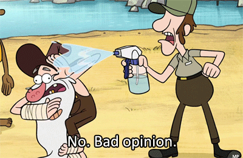

GraphQL

Warning
Rob Gill Type & Schema Frustration zone
What is GraphQL
"The Rest Killer"
Author for Pluralsight, Lynda, and O’Reilly and curator of http://jsComplete.com#REST APIs are now #RestInPeace APIs | Long live #GraphQL
— Samer Buna (@samerbuna) September 17, 2015
What is GraphQL - cont
- Describe your data
- Ask for what you want
- Get Predictable Results
Describe your data
type Project {
name: String
tagline: String
contributors: [User]
}
Ask for what you want
{
project(name: "GraphQL") {
tagline
}
}
Get predictable results
{
"project": {
"tagline": "A query language for APIs"
}
}
What are we trying to solve
Rest APIs give us either too much or too little
Multiple calls for linked resources
interpretation of the REST Holy book which can cause long discussions
or even worse.....
....custom method endpoints
Example
Downsides
- Cannot list all fields (over fetching)
- Maintain a Schema
- Duplicate calls for data
Fix Duplication calls
Facebook - Dataloader
GitHubBut i have already have built a huge restful API?
Very practical to build into your current API
{
resolve: () => new Promise()
}
{
resolve: () => fetch('https://localhost:4000/users')
.then(res => res.json())
}